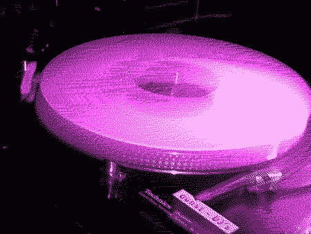

| dunst
DJ's |
|  |
| dunst DJ's We are a group of exiting and creative DJ's with our own individual style and edge. We plan the line up for all the dunst parties. We are all gay or bi sexual and like to play for a mixed and engaged crowd in the Copenhagen Club scene and abroad. As all other members in dunst, we don't care what your sexuality is - as long as you use it. Get info about the styles of the individual dj's, from the menu to the right. And and where they play in our CALENDAR All dunst DJ's can be hired. We are also interested in getting promo material from DJ's, who wants to play at our parties. Contact and booking: dj(a)dunst.dk |